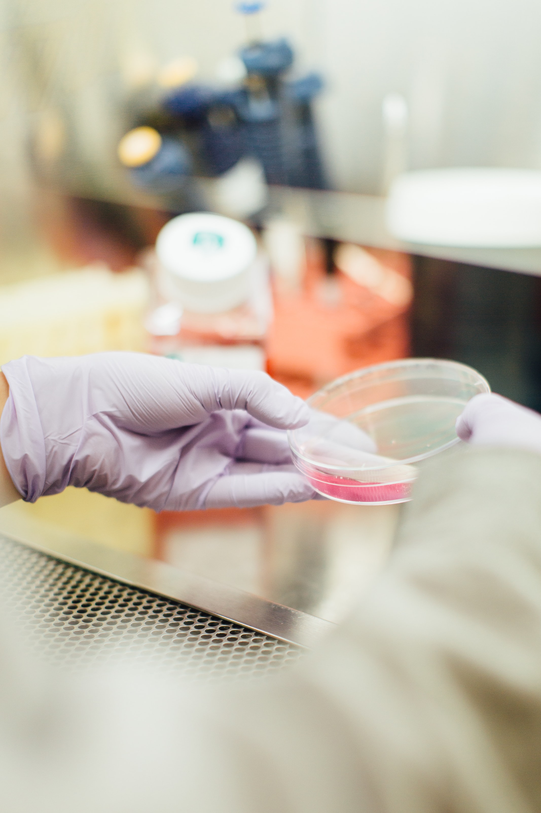
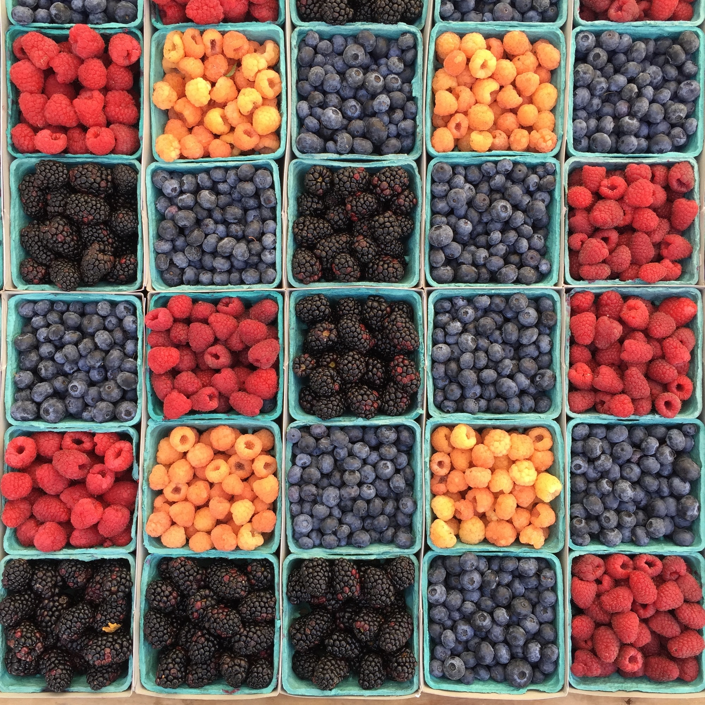

filler text filler text filler textfiller text filler text filler text filler text filler text filler text filler text filler text filler text filler text filler text filler text filler text filler text filler text

Reducing levels of these bacterial pathogens in food-producing animals and prevent the cross contamination in the food processing plants are effective ways to reduce food safety risks for humans

Reduction of pre- and post-harvest levels of colonization and contamination with foodborne bacterial pathogens including E. coli O157, Campylobacter jejuni and Salmonella enterica in foods specifically meat and meat products and development of vaccines that prevent colonization of animals by these enteric pathogens which may reduce human gastrointestinal infections

Development of bioactive pre-biotics, probiotics, and/or its combination (synbitics) for alternative source of therapeutic and sub-therapeutic (growth promoter) components for organic and conventional farm animal production and stimulate the growth probiotic and the production of its metabolites by genetically engineered beneficial bacteria.

Develop the efficient and faster technology to improve the detection of foodborne enteric bacterial pathogens in food products and other polluted materials
| 12/30/21 | Website launched! |
| 7/18/21 | Attended IAFP Annual Meeting at Arizona |
| 6/1/21 | Welcome to the team, Matthew Wall and Phuong Nyuyen |
.accordion-flush class. This is the second item's accordion body. Let's imagine this being filled with some actual content..accordion-flush class. This is the third item's accordion body. Nothing more exciting happening here in terms of content, but just filling up the space to make it look, at least at first glance, a bit more representative of how this would look in a real-world application.